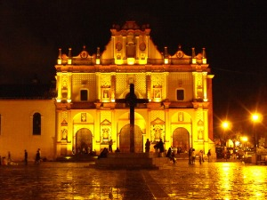
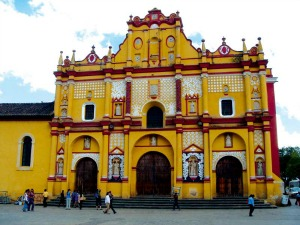
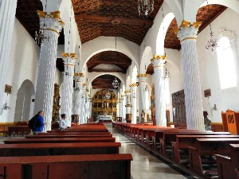
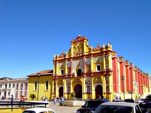
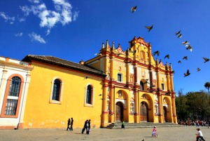

Es una de las construcciones religiosas más antiguas de la ciudad. Su edificación comenzó en 1533 y su última remodelación se registró en 1947. La catedral es uno de los emblemas de San Cristóbal, sus colores son alusivos al huipil, vestimenta típica de la comunidad indígena maya.
La catedral es el sitio en el que se realizan las principales funciones de la religión católica oficiadas por el obispo, como navidad, semana santa y corpus cristi, esta última reviste especial originalidad, es ocasión de elaborar los dulces conmemorativos que se expenden debajo del palacio municipal y del portal oriente.
Se encuentra ubicada en la avenida Crescencio Rosas entre las calles Guadalupe Victoria y 5 de febrero.
Si usted se encuentra ubicado en el arco del carmen camine 3 cuadras sobre el andador hasta llegar al palacio municipal y justo en frente vera la catedral.
En el lugar usted puede realizar actividades como:
* Fotografía
* Visita a lugares históricos
* Visita a iglesias
* Manifestaciones Religiosas





posicione el mouse sobre las imágenes